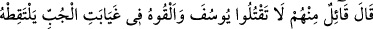
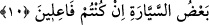
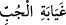
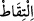

10. İçlerinden bir sözcü: “Yûsuf’u öldürmeyin, onu kuyunun dibine atın,
kervanlardan biri görüp onu alsın, eğer yapacaksanız (böyle yapın).” dedi.
Bu âyet mukadder bir soruya cevap cümlesidir: ‘Acaba görüşlerine sunulan bu iki
şıkkı ittifakla benimsediler mi, yoksa içlerinden biri karşı mı çıktı?’ Bu soruya cevaben
şöyle buyrulmuştur: “İçlerinden bir sözcü” diğerleri Yûsuf’u öldürmeyi câiz
gördükleri halde onlara bu konuda yardım etmeyişinden anladığımız kadarıyla en güzel
görüşlüleri olan Yahuda “Yûsuf ’u öldürmeyin.” Çünkü hiç suçu yokken onu öldürmeniz
büyük bir suçtur. Onu ıssız bir yere de atmayın. Çünkü bu da öldürmekle eşdeğerdir.
“Onu kuyunun dibine atın.” “__WORD__” kuyunun dibi ve en karanlık yeri olan aşağı
kısmıdır. Kuyunun dibi, bakanların görüşünden gaib kaldığı içindir ona “gayâbe”
denmiştir. “Cübb” ise suyu çekilmiş olan kuyuya denir. Çünkü böyle bir kuyuda toprak
parçalarından ve yarıklarından başka bir şey yoktur. Kuyu su verdiği zaman ise “bi’r”
adını alır. “kervanlardan biri” kervan, yeryüzünde gidip gelen grup demektir. “görüp”
zâyi ve telef olmaktan kurtarmak üzere “onu alsın.” Yâni yoldan geçen bazı kimseler
oraya ulaşırlar ve Yûsuf’u başka bir yere götürürler. Siz de ondan kurtulursunuz.
Buradaki “__WORD__” fiilinde zâyî olmasına ramak kalmış birini alıp kurtarmak mânâsı
vardır.
“eğer” görüşüme uygun olarak bir şeyler “yapacaksanız” böyle yapın “dedi.” Yâni
sizin garazınız Yûsuf’u aranızdan uzaklaştırmaksa böyle yapmak gerekir. Bu sözcü,
sözünü onlara kesin bir karar olarak ifade etmedi. Aksine onları da kendi görüşüne
çekmek; kalblerini bu düşünceye ısındırmak, kendisiyle alay etmelerini, baskıyla ve
kendi başına hareket ettiğini söylemelerini önlemek için bu düşünceyi onların da
görüşüne arz etti.
Müfti Sa‘dî şöyle der: Bu sözü söyleyen bu fikir onların dile getirdiği fikirlere göre
tedbire daha muvafık olduğu için söyledi. Çünkü Yûsuf’u alacak olan kervan onu uzak
bir yere götürecek ve böylece kendileri bir şey yapmadan maksadları hâsıl olacaktı.
Öteki fikirlerin uygulanması durumunda belki babaları onu götürmelerine izin
vermeyebilir, belki de maksadlarını anlayabilirdi.
Şu kardeşlere bakın! En merhametlisi bile Yûsuf’un kuyunun dibine atılmasından
başkasına râzı olmuyor. Günümüz kardeşleri ve evlâtları da böyle. Çünkü dilleri her
türlü şerri telâffuz ediyor da hiçbir hayır söylemiyor!
Ey Câmî, zamâne çocukları hak sözden sağır ve dilsizdir
Onlar Hakk katında “hayvanların en şerlisi”nden[11] başka değildir
Dostluk libâsında düşmanlık işi görürler